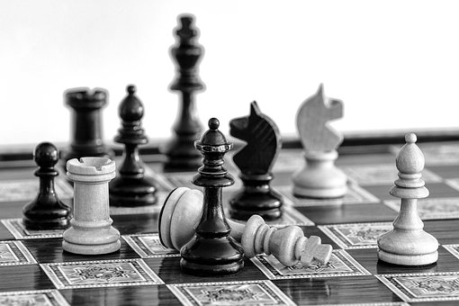
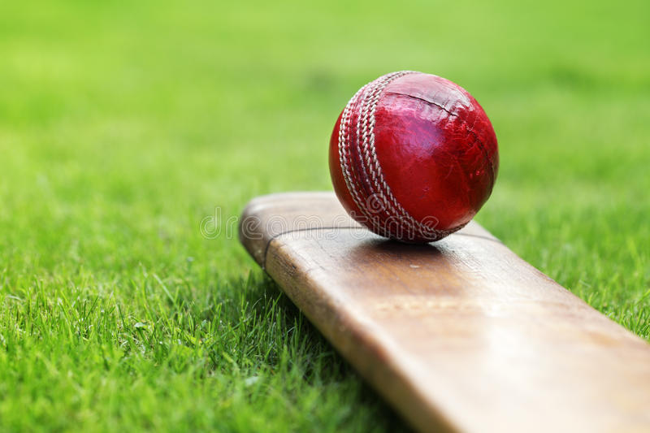

Chess
Learned Chess professionally and participated in Multiple Tournaments

Cricket
Avid fan of Cricket

Photography
Interested in Photography. p.s This photo was NOT taken by me
Hobbies
Learned Chess professionally and participated in Multiple Tournaments
Avid fan of Cricket
Interested in Photography. p.s This photo was NOT taken by me